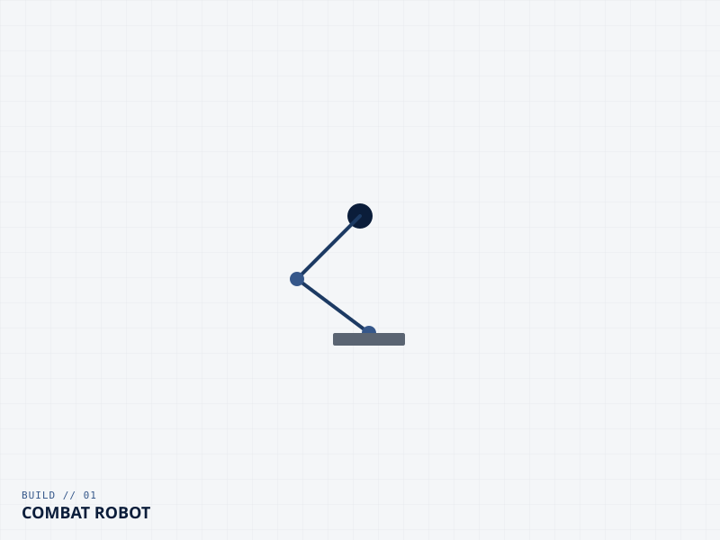
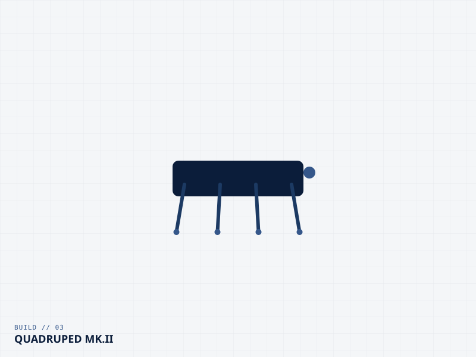
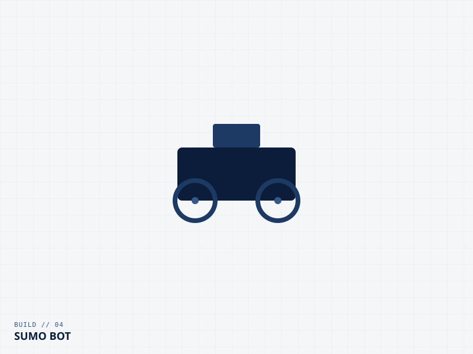
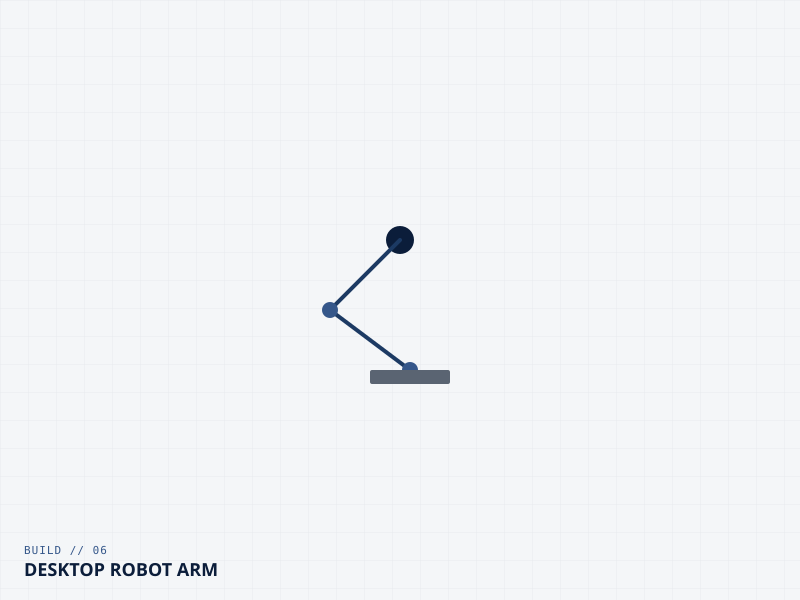

Build Log
All Projects
Every project I've built, from antweight combat robots to quadruped platforms. Thumbnails are cropped to a fixed frame so the grid stays even regardless of how each photo was originally shot.

3lb Combat Robot
A horizontal spinner built for antweight combat — full CAD to cage build log.
Quadruped Mk. I
First-generation quadruped platform — direct-drive legs and open-loop gait testing.

Quadruped Mk. II
Redesigned leg linkage and a custom BLDC gimbal motor drive for higher torque density.

Sumo Bot
Line-sensing, high-traction sumo competitor built for a university robotics event.

Planetary Gearbox
3D-printed 5:1 planetary reduction designed for the quadruped's hip actuators.

Desktop Robot Arm
4-DOF benchtop arm used to prototype the quadruped's inverse kinematics.